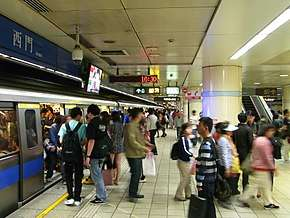

玖拾年代
西門站-現今風貌
車站概要
車站位於中華路一段下方，與成都路、衡陽路及寶慶路的交叉路口，站區位在萬華區萬壽里、西門里、新起里與中正區建國里、光復里交界處。由於2000年8月31日以前，板南線沒有專屬的機廠，行駛其上的電聯車必須透過小南門線至淡水線的北投機廠進行維修作業，因此於本站北端設有橫渡線聯絡南港線與小南門線，以供南港線列車經小南門線行駛至中正紀念堂站，再換軌至淡水線前往北投。在南港線專用的南港機廠啟用後，該橫渡線主要使尖峰時段備用列車前往停用月台儲放
“西門站位於台灣台北市中正區、萬華區交界處，為台北捷運板南線、松山新店線交會的捷運車站。臺灣鐵路管理局縱貫線過去亦曾於此處「名義上」設有西門車站；現在設有「西門緊急停靠站」地下設施與捷運站共構，提供列車發生事故時方便停靠疏散旅客。”

小知識

車站構造
本站設有6座出入口，為地下三層車站，月台型式採島疊式月台，為同月台平行轉乘站，兩座島式月台分別位於地下第二、三樓，兩月台上下平行重疊，並設有半高式月台門。 西側靠近台鐵和高鐵的地下行車隧道（不含地下街；其中西側的兩個出口——出口1及出口6自鐵路隧道上方跨越，並在出口長廊皆設有通往台鐵高鐵之西門緊急停靠站大廳的地下連通道），車站北側與西門地下街（尚未正式營運，但供一般民眾通行；並設有「西門智慧圖書館」）連通。
“1930年（日治時期），設置「新起町乘降場(しんきちょう/Shinkichō)」（因臨近新起町而得名），專供單節汽油客車停靠，地點大致緊臨今捷運西門站現址。”
小知識